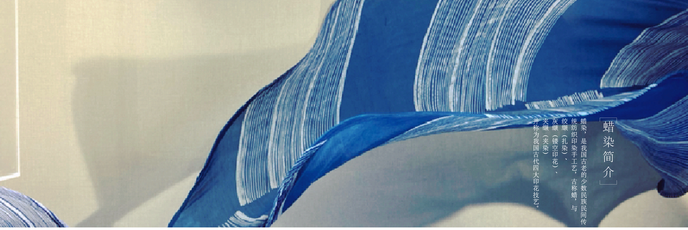
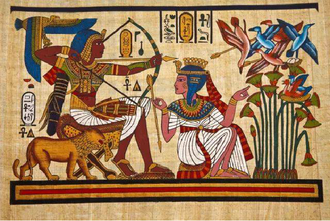
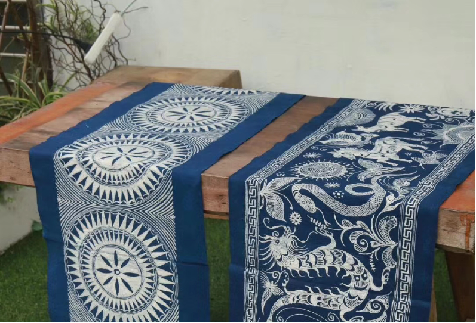
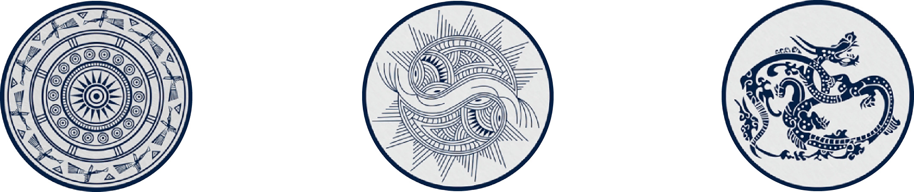

首页
蜡染简介
工艺流程
文创产品


埃及
埃及蜡染主要以横带状的排列结构，用平行线来划分画面。
画面主要是人物故事为主，象形文字和图像并用。
公元前5世纪，有印度从蓝草中提取靛蓝染棉纺织品记录。
印度
印度印染的风格纹样以植物纹和几何纹为主，构图排列的秩序感强，复合型的纹样较多。
赵丰教授在《丝绸艺术史》一书中考证了蜡染棉织品。

中国
中国的蜡染以蓝印布为主流特色，几何纹和植物纹较多，构图完整平衡对称。
中国的早期蜡染，比埃及、日本、秘鲁所发现的要早得多。
马来群岛
马来群岛的蜡染颜色鲜明，图案以蝴蝶、花卉、飞鸟和几何图案为主，设计别致、极具特色。
《蜡染》一书中也提到蜡染发源地在瓜哇。


查看更多
花技艺,也是我国非物质文化遗产保护的对象.我们致力努力保护蜡染这一传统文化工艺的传承.
让世界看见中国的美
深入了解蜡染
发现更多美好
使用是最好的传承
有意见可以提出
皖ICP-1307327号 版权所有：浸染时光网 | 地址:安徽省合肥市蜀山区五里墩街道史河路八号